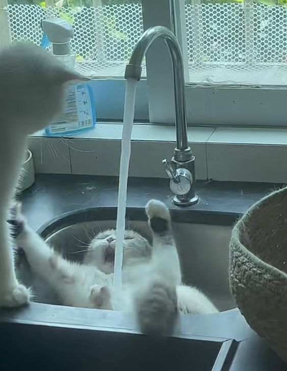

 <!-- 2 УСЛУГИ
 <div class="container dropdownmain my-6">
    <div class="container dropdown d-flex flex-column">
        <button class="dropdown-button">chill</button>
        <div class="dropdown-content">
            <p>Продукты:</p> 
            3 часовая сессия в формате видео/аудио звонка. 
            На сессии НЛП ваш запрос — это кончик ниточки, потянув за который, мы размотаем клубок ваших ограничивающих убеждений и, на нейронном уровне, создадим новую, помогающую стратегию, благодаря которой, вы получите позитивные изменения и желаемые результаты.
            </div> 
    </div>
    <div class="container dropdown d-flex flex-column">
        <button class="dropdown-button">chill</button>
        <div class="dropdown-content">
            <p>Программа сопровождения:</p>
            Еженедельные сессии + сопровождение в мессенджере. 
            
            Быстро реализовать кардинальные изменения в мышлении не всегда возможно. Иногда это поэтапный процесс со взлетами и падениями. 
            
            Мы пойдем вместе до результата, закрепляя и  усиливая изменения вашего мышления и поведенческие стратегии на каждом этапе. 
            Вы сможете получить поддержку и рекомендации, поделиться успешными изменениями или сомнениями, просто написав мне в мессенджер. 
            Программа сопровождения подходит вам, если вы желаете реализовать кардинальные изменения затрагивающие все сферы вашей жизни: отношения, самореализация, доход, эмоциональное состояние, персональный и духовный рост.</div> 
    </div>
    <div class="container dropdown d-flex flex-column">
        <button class="dropdown-button">chill</button>
        <div class="dropdown-content">
            <h2>Ретриты в Италии:</h2> 
            Справляться с проблемами на берегу моря, в уединённом живописном уголке Италии, в личном контакте с тренером /наставником/экспертом - это ли не тот самый способ достижения целей в удовольствии? 
            
            Наедине с девственной природой, созерцая волнующий восход солнца, когда всё наше древнее естество оживает, а душа находит ту точку умиротворения и истинного счастья бытия, к которой мы стремимся на протяжении, быть может, всей нашей жизни. 
            
            На авторских ретритах, которые я организовываю, вы можете выбрать трансформационные программы с экспертами по душе и по потребностям в сферах: 
            -отношения; дети; партнеры; конфликты; хочу серьезных отношений/семью/любовь. 
            -самореализация/бизнес/финансы
            -здоровье/красота/молодость/эмоциональное состояние
            -все надоело, хочу поменять свою жизнь, но не знаю как
            -треннинги НЛП: практик, мастер, консультирование 
            
            Каждый из экспертов дополняет и усиливает свою программу практиками на физическом уровне: массаж, йога, гимнастика, медитации. 
            
            Также на каждом ретрите есть возможность посетить мастерклассы, практикумы и мастермайнды по интересам: экскурсии, уроки итальянской кухни, нейрографика, эфирные масла, медитации, энергетические практики, практикумы НЛП.</div> 
    </div>
    <div class="container dropdown d-flex flex-column">
        <button class="dropdown-button">chill</button>
        <div class="dropdown-content">комменты</div> 
    </div>
</div>    
<hr> -->

<!doctype html>
<html lang="en">
    <head>
        <title>Title</title>
        <link rel="stylesheet" href="css/zagotovki.css">
        <link rel="stylesheet" href="https://cdn.jsdelivr.net/npm/bootstrap@5.3.2/dist/css/bootstrap.min.css">
        <meta charset="utf-8" />
        <meta
            name="viewport"
            content="width=device-width, initial-scale=1, shrink-to-fit=no"
        />

        <link
            href="https://cdn.jsdelivr.net/npm/bootstrap@5.3.2/dist/css/bootstrap.min.css"
            rel="stylesheet"
            integrity="sha384-T3c6CoIi6uLrA9TneNEoa7RxnatzjcDSCmG1MXxSR1GAsXEV/Dwwykc2MPK8M2HN"
            crossorigin="anonymous"
        />
    </head>

    <body>
        <!-- <div class="dropdown">
            <button class="dropdown-button rounded-top">Нигодяй</button>
            <div>
                <div class="dropdown-content">
                    <ul>
                        <li></li>
                        <li></li>
                        <li></li>
                        <li></li>
                        <li></li>
                        <li></li>
                    </ul>
                </div>
            </div>
        </div> -->


        <div class="box-3">
            <div class="btn btn-three">
              <a href="#what"></a>
            </div>
          </div>
          

        <script src="https://code.jquery.com/jquery-3.7.1.min.js" integrity="sha256-/JqT3SQfawRcv/BIHPThkBvs0OEvtFFmqPF/lYI/Cxo=" crossorigin="anonymous"></script>   
        <script src="js/bootstrap.bundle.min.js"></script>
        <script src="js/zagotobki.js"></script>
    </body>
</html>
